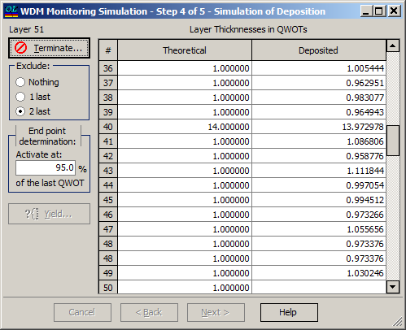

WDM Monitoring Simulation - Simulation of Deposition
WDM Monitoring Simulation - Simulation of Deposition

At the third step of the dialog, press the Start button to run the computer simulation of the deposition process. During computations, this button is designated as the Terminate button and allows for the interruption of computations.
The simulated values of the deposited QWOT layer thicknesses are shown in the spreadsheet column Deposited and can be compared with theoretical thickness values (Theoretical column).
The Exclude radio button allows excluding 1 or 2 last filter layers from the error simulation procedure. This should be done when a one-layer or two-layer AR coating is added at the top of the filter stack. Remember that turning-point optical monitoring is effective only for layers with integer QWOT thicknesses.
The End point determination entry field allows the user to specify a relative layer thickness value when the internal algorithm for determining the end point of layer deposition is activated. This value is specified in percentages of one QWOT value. The default value is 95%, which corresponds to a QWOT thickness of 0.95. For example, if the layer thickness is 8 QWOT, then the end point determination routine is activated when 7.95 QWOT layer thickness is already deposited.
The Yield button activates the Filter Production Yield module.
See also: